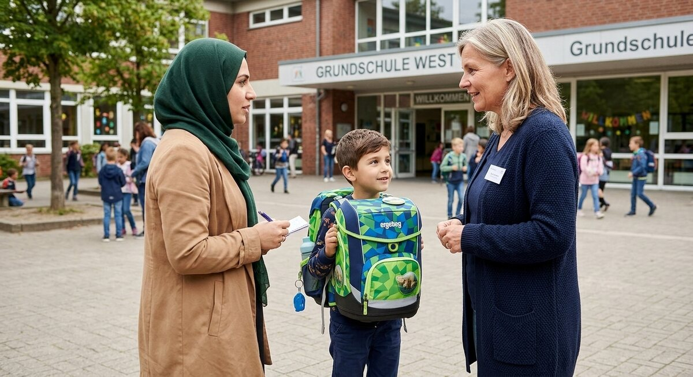

Teil 2 · Bild und Erfahrung
Karte 017
Eltern und Schule
Ausführliches Übungsmaterial zur Vorder- und Rückseite der Karte.

Ihre Aufgabe
- die Personen auf dem Bild
- worüber sie vielleicht sprechen
- was für Eltern in der Schule wichtig ist
- wie der Kontakt zwischen Eltern und Schule sein sollte
- Ihre eigenen Erfahrungen oder Ihre Meinung dazu
Interaktives Sprechtraining
Mit ChatGPT sprechen üben
Kopiere zuerst die Übungsanweisung. Öffne anschließend die ChatGPT-App oder ChatGPT im Browser, starte den Sprachmodus (Voice Mode) und füge den Prompt in diesen Chat ein.
- Tippe auf „Prompt kopieren“.
- Öffne anschließend die ChatGPT-App oder nutze den Browser-Link.
- Melde dich bei Bedarf an und starte in ChatGPT zuerst den Sprachmodus (Voice Mode).
- Füge den bereits kopierten Prompt in den Chat des Sprachmodus (Voice Mode) ein und sende ihn ab.
- Beginne anschließend die Sprechübung.
- Wenn du die Übung beenden und Feedback bekommen möchtest, sage:
Die Übung ist beendet. Bitte gib mir jetzt Feedback.
Prompt anzeigen oder manuell kopieren
ChatGPT ist ein externer Dienst. Für den Sprachmodus (Voice Mode) musst du dich möglicherweise bei deinem ChatGPT-Konto anmelden und den Zugriff auf das Mikrofon erlauben. Verfügbare Funktionen hängen von deinem Gerät und Konto ab. Die Übung ersetzt keine offizielle Prüfungsbewertung.
Nützliche Satzanfänge
- Ich sehe ein Gespräch zwischen …
- Wahrscheinlich geht es um …
- Für Eltern ist wichtig, dass …
- Ich finde, Schule und Familie sollten …
- In meiner Erfahrung …
Modellantwort anhören
Höre zuerst aufmerksam zu. Sprich danach nicht einfach alles nach, sondern bearbeite die Aufgabe mit eigenen Informationen.
Modellantwort
Auf dem Bild sehe ich ein Gespräch zwischen einer Lehrerin, einem Elternteil und einem Kind. Das Kind trägt einen Schulranzen, deshalb denke ich, dass die Situation in oder vor einer Schule stattfindet. Wahrscheinlich sprechen sie über den Unterricht, über Hausaufgaben oder vielleicht über die Entwicklung des Kindes.
Ich finde, für Eltern ist es sehr wichtig, mit der Schule in Kontakt zu bleiben. Wenn Eltern wissen, wie es dem Kind geht, können sie besser helfen. Gleichzeitig sollten Lehrerinnen und Lehrer klar und freundlich erklären, was wichtig ist. In meiner Erfahrung sind solche Gespräche manchmal ein bisschen stressig, besonders wenn man noch nicht jedes Wort versteht. Aber sie sind notwendig, denn Schule und Familie sollten zusammenarbeiten.
Mögliche Prüferfragen und Antwortideen
-
Gehen Sie gern zu Elternabenden?
Antwortidee: Ja, wenn ich Zeit habe, gehe ich hin, weil ich Informationen direkt bekomme.
-
Was ist für Kinder in der Schule besonders wichtig?
Antwortidee: Wichtig sind Unterstützung, Ruhe beim Lernen und gute Kommunikation.
-
Sollte man bei Problemen sofort mit der Lehrerin sprechen?
Antwortidee: Ja, ich finde schon. Frühe Gespräche sind oft besser als spätere Konflikte.
-
Wie kann man als Elternteil helfen, wenn das Kind Deutsch lernt?
Antwortidee: Man kann zusammen lesen, zuhören und Interesse zeigen.
Wortschatz
| Deutsch | Englisch |
|---|---|
| die Lehrerin | teacher |
| der Schulranzen | school bag |
| die Hausaufgabe | homework |
| die Entwicklung | development |
| der Elternabend | parents’ evening |
| zusammenarbeiten | to work together |
| das Gespräch | conversation |
| unterstützen | to support |
Schnelltraining
Sagen Sie zwei Sätze mit: „Ich glaube, dass …“; „Ich finde wichtig, dass …“.